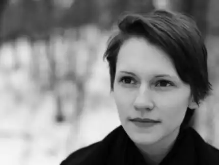

Народилась 3 вересня 1991 року у Києві. Дідусь — поет, громадський діяч, дисидент Михайло Дацюк. Вітчим — поет Василь Герасим'юк.
Писати вірші почала у школі, публікувалась у періодичних виданнях "Соняшник", "Українська літературна газета", "Літературна Україна" та ін.
Навчалась в Інституті філології Київського національного університету імені Тараса Шевченка на кафедрі теорії літератури, компаративістики та літературної творчості. Під час навчання в університеті в нічні зміни підробляла у книжковому магазині. Пізніше почала працювати на проєкті 1576.ua під керівництвом Дмитра Стуса. У 2013 році Олена Герасим'юк стала лавреаткою одразу кількох письменницьких конкурсів: премії конкурсу імені Леоніда Кисельова, Міжнародної українсько-німецької премії імені Олеся Гончара, другої премії літературного конкурсу "Смолоскип". Поетичне відкриття 2013 року. В серпні 2013 року разом із письменником та спортсменом Євгеном Михедою стали першими резидентами першої в Україні Резиденції для молодих україномовних письменників "Станіславський феномен", започатковану письменником і видавцем Василем Карп'юком у Івано-Франківську. У 2013—2014 роках брала активну участь у Революції Гідності в Києві. Нагороджена волонтерським нагрудним знаком. Спогади Олени увійшли в книгу "Майдан. Свідчення. Київ, 2013—2014" (видавництво "Дух і літера"). Разом із Василем Карп'юком упорядковує поетичну книгу "Євромайдан. Лірична хроніка". Телеканал UA: Перший відзняв свідчення письменників, які брали безпосередню участь у подіях Революції Гідності, до Дня пам'яті Героїв Небесної Сотні. Серед них — Олег Короташ, Ірина Цілик, Олеся Мамчич, Дмитро Лазуткін, Олена Герасим'юк та інші. З початком війни Олена займалась волонтерською діяльністю. Їздила на передову виступати перед військовими, привозила волонтерську допомогу, а також з письменницею Оленою Степаненко проводила серію благодійних заходів для збору коштів українській армії. В 2014—2015 роках працювала в українському бюро "Радіо Свобода". Працювала над книгою "АД-242. Історія мужності, братерства і самопожертви" (авторка ідеї — Ірина Штогрін). З 2016 року починає працювати в команді документального фільму "Невидимий Батальйон" про долі шістьох жінок-військовослужбовиць. У 2017 році почала працювати на радіо "Армія FM" при Міністерстві оборони України. В 2017 році пройшла тижневий вишкіл та поїхала на війну парамедикинею у складі добровольчого медичного батальйону "Госпітальєри". Працювала у лікарні міста Авдіївка, на передовій поблизу селищ Піски, Водяне (Маріупольського напрямку), міста Мар'їнка. Нагороджена медаллю батальйону "За збережене життя". Брала участь у спецоперації по затриманню Володимира Цемаха — проросійського бойовика, який мав стосунок до збиття Boeing 777 рейсу MH17 та інших тяжких злочинів — а саме разом з напарником надавала першу допомогу тяжкопораненим розвідникам Олександрові Колодяжному та Дмитру Гержану. За особисту мужність, виявлену у захисті державного суверенітету та територіальної цілісності України, самовіддане служіння Українському народу нагороджена державною медаллю "За врятоване життя". 2014 рік — у видавництві "Смолоскип" вийшла перша збірка віршів "Глухота". Автором передмови до збірки виступив письменник Іван Андрусяк. На обкладинці — робота художниці Відани Білоус. 2017 рік — у видавництві "Клуб Сімейного Дозвілля" вийшла друком книга "Розстрільний Календар" у співавторстві з Тетяною Швидченко, Олександрою Очман, Олександрою Статкевич та іншими. На обкладинці — робота художника Нікіти Тітова. Це унікальна хроніка політичних репресій в радянській Україні. Страшні події історії ХХ століття — арешти, допити, заслання, розстріли українських політичних діячів, військових, науковців, митців, письменників, громадських активістів — викладені не у звичній хронологічній послідовності, а прив'язані до традиційного календаря. Тут не лише зафіксовані дати подій, але й подані короткі розповіді про долі людей, які зазнали переслідувань та катувань. Така форма викладу наочно показує схему роботи радянської репресивної машини. Ідея "Розстрільного Календаря" з'явилась під час акції вшанування пам'яті українських митців розстріляних в урочищі Сандармох, яку влаштували на Майдані Незалежності Олена Герасим'юк та Тетяна Швидченко. 2020 рік — у видавництві "Люта Справа" вийшла друком книга третя книга поезій "Тюремна Пісня". Книга отримала високу відзнаку і стала лауреатом премії BookForum Best Book Award 2020 у номінації "Сучасна українська поезія"— за поетичну неординарність. В основі книги — одноіменна гостро-соціальна поема, заснована на реальних подіях та історичних фактах. Читка поеми відбулась у квітні 2016 року у підвалі Книжкового Арсеналу, який вперше відкрили спеціально для цієї події. Головні ролі виконували бійці та колишні в'язні — Олекса Бик, Дмитро Савченко та Денис Поліщук. Консультанткою постановки стала сценаристка Наталя Ворожбит, художниця — Дар'я Кольцова, кураторка — Анастасія Євдокимова.